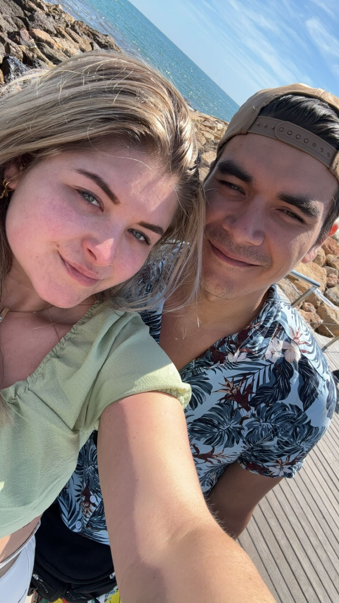

Laat ik mijzelf is even in het kort voorstellen.
Mijn naam is Daan van Gorp, 27 lentes jong.
Samen met mijn vriendin en onze twee hondjes wonen ik in het pitoreske Tilburg.
Ik zou mijzelf omschrijven als een leergierig persoon met meer dan voldoende sociale capaciteiten.
Door mijn verschillende ervaringen binnen de horeca tak, heb ik om leren gaan met verschillende mate van druk.
Ook heb ik verschillende lagen binnen bedrijfsvoering uitgevoerd, waardoor ik al gauw een leidende rol op mij neem. Daarnaast ben ik een enthausiast persoon wat graag mensen vrolijk maakt.
Dat laat ik graag binnen mijn werk merken.
Dit ben ik
